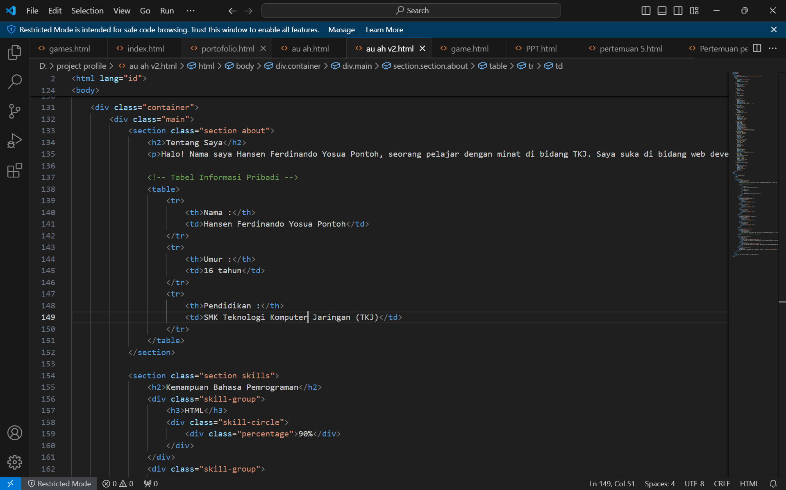

Tentang Saya
Halo! Nama saya Hansen Ferdinando Yosua Pontoh. Saya adalah seorang pelajar yang sangat antusias dalam bidang Teknologi Komunikasi Jaringan (TKJ). Minat saya juga meluas ke web development dan videografi. Saya selalu bersemangat untuk belajar hal-hal baru dan mengembangkan keterampilan saya. Saya percaya bahwa teknologi dan seni visual adalah cara yang efektif untuk berkomunikasi dan mengekspresikan ide. Dengan itu, saya terus mencari peluang untuk belajar lebih dalam dan memperluas pengetahuan saya, baik melalui proyek pribadi maupun kolaborasi dengan orang lain.
| Nama : |
Hansen Ferdinando Yosua Pontoh |
| Umur : |
16 tahun |
| Pendidikan : |
SMK Teknologi Komputer Jaringan (TKJ) |
Kemampuan Bahasa Pemrograman
Kemampuan Videografi dan Fotografi
Organisasi
Persekutuan Doa
Pada tahun ajaran 2021-2022, saat saya masih berada di jenjang SMP, saya aktif mengikuti organisasi Persekutuan Doa (PD). Dalam organisasi ini, saya berperan sebagai pemusik, di mana saya memainkan alat musik saxophone dengan penuh semangat. Pengalaman ini sangat berarti bagi saya karena memungkinkan saya untuk mengembangkan keterampilan musik dan berkontribusi dalam kegiatan yang bermanfaat bagi komunitas. Pada tahun ajaran 2023-2024, saya kembali bergabung dengan Persekutuan Doa dan terus menjalankan peran sebagai pemusik. Kesempatan ini tidak hanya memperkuat keterampilan musik saya tetapi juga memperluas jaringan sosial saya dan memperdalam pengalaman spiritual saya.
Proyek Saya
Proyek 1: Website Pribadi

Salah satu proyek utama saya adalah pembuatan website pribadi ini. Proyek ini merupakan hasil dari penerapan berbagai keterampilan yang saya pelajari dalam pengembangan web. Saya menggunakan bahasa pemrograman seperti HTML, CSS, dan JavaScript untuk membangun dan mendesain website ini. Proyek ini tidak hanya membantu saya dalam mengasah keterampilan teknis saya, tetapi juga memberikan kesempatan untuk mengekspresikan kreativitas saya dalam merancang antarmuka pengguna yang intuitif dan menarik.
Proyek 2: Short Film "Sad Boy"
Selain pengembangan web, saya juga aktif dalam bidang videografi. Salah satu proyek terbaru saya adalah pembuatan short film berjudul "Sad Boy". Dalam proyek ini, saya bertindak sebagai kameramen dan editor. Proses pembuatan film ini melibatkan perencanaan yang matang, pengambilan gambar, serta editing untuk menghasilkan produk akhir yang berkualitas. Pengalaman ini sangat berharga karena memungkinkan saya untuk menerapkan keterampilan teknis dalam videografi dan storytelling.